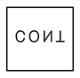
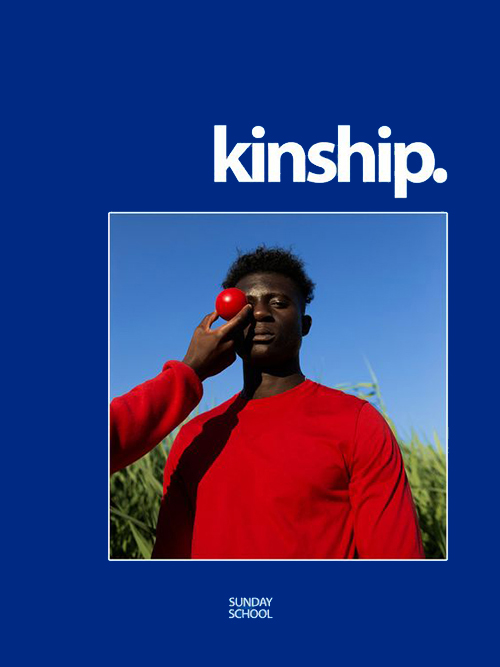
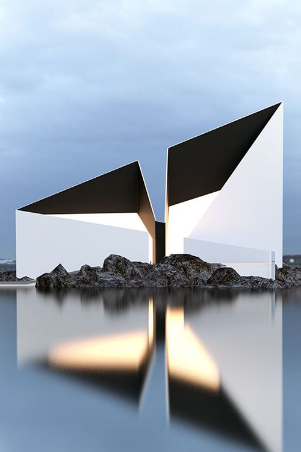
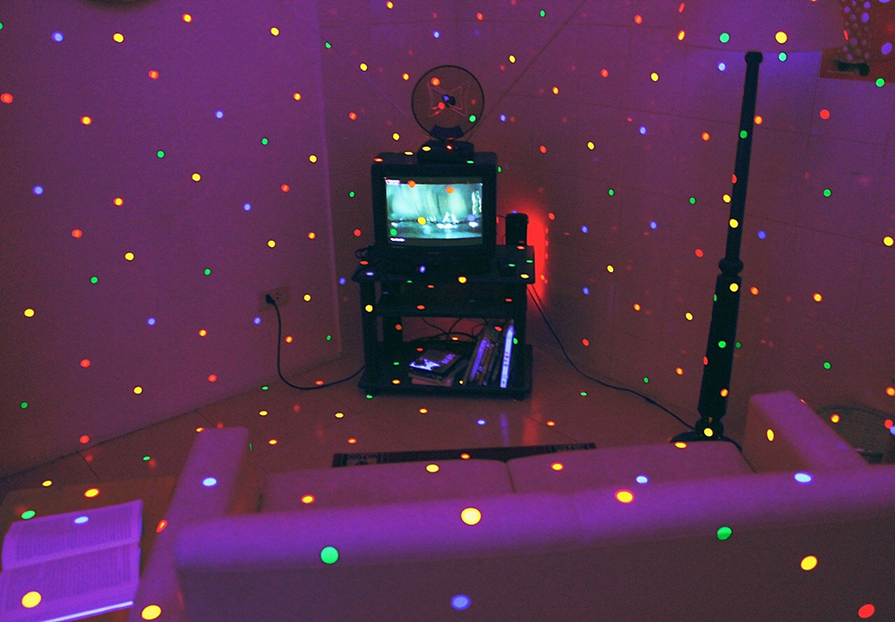
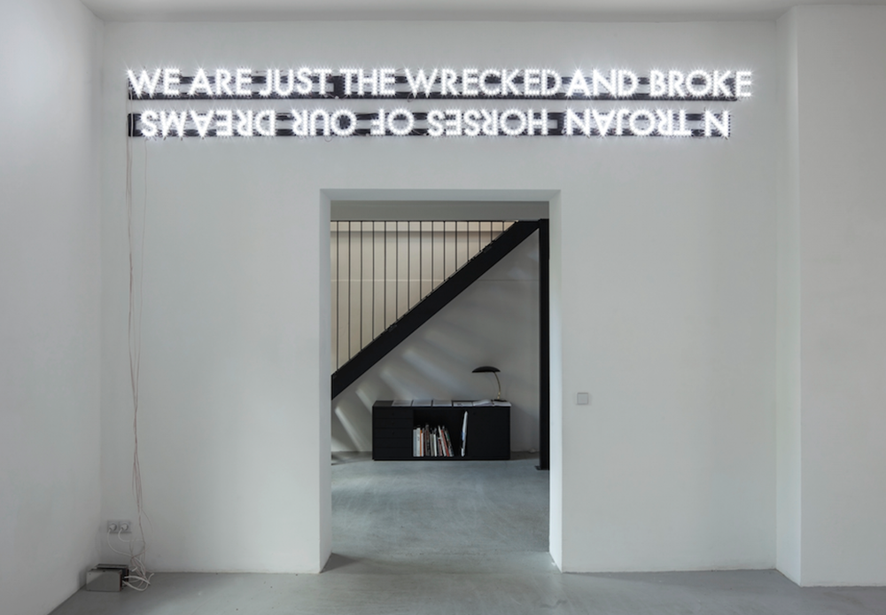

MOODBOARD

COLOR SCHEMES


TYPOGRAPHY

Family: Aktiv Grotesk – Sans Serif
Typeface: Aktiv Grotesk Hairline
I have chosen this font, because it is very simple and minimalistic and it is also a 21st century interpretation of a grotesque sans typeface.
So it s a contemporary typeface. Grotesque fonts have been hugely popular over the last fifty years, with designers and font-users choosing them for their neutrality, contemporary feel, utilitarianism, and seriousness; these are fonts which can be applied in a broad range of contexts and media.
LOGO
IMAGES
SMALL
resolution: 500x667 px, size: 116 kb
resolution: 500x750 px, size: 132 kb
MEDIUM
resolution: 1000x695 px, size: 219 kb
resolution: 1000x694 px, size 219 kb
FOLDER STRUCTURE